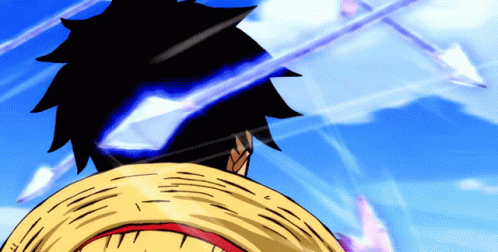
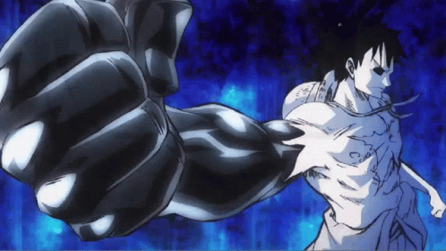
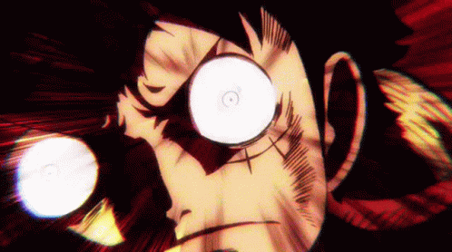

Haki
Tajemnicza siła, którą posiada każde stworzenie na świecie. Nie różni się wiele od zwykłych zmysłów. Większość ludzi jednak jej nie zauważa lub nie udaje się im jej przebudzić. Są dwa rodzaje dominacji dostępne dla każdego, przebudzane przez odpowiedni trening; jest jednak trzeci typ, który posiąść mogą tylko "wybrańcy".
Rodzaje haki:
-
Haki Obserwacji (Kenbunshoku Haki)
 -
Haki uzbrojenia (Busoshoku Haki)
 -
Haki Królewskie (Haoshoku Haki)
